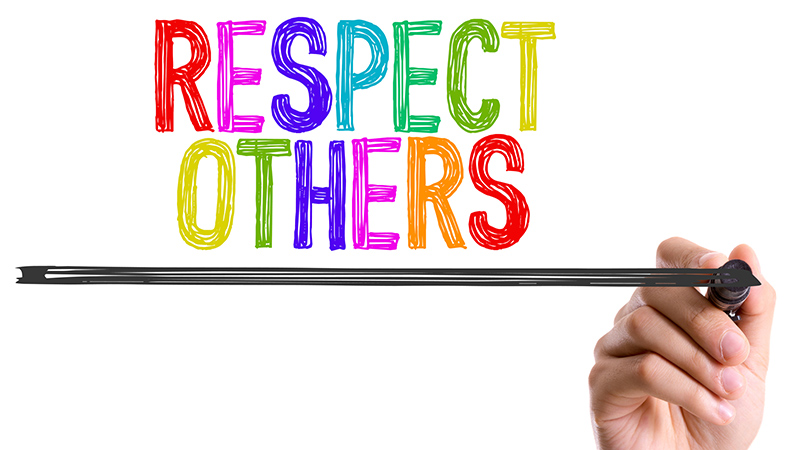

Code of Conduct
In a nutshell, the code of conduct of Taskflow is respect. No programmers know everything, and we must learn from each other and respect his or her area of expertise.
Taskflow Community Code of Conduct
The Taskflow community is made up of members from around the globe with a diverse set of skills, personalities, and experiences. It is through these differences that our community experiences success and continued growth. We expect everyone in our community to follow these guidelines when interacting with others both inside and outside of our community. Our goal is to keep ours a positive, inclusive, successful, and growing community.
As members of the community,
- We pledge to treat all people with respect and provide a harassment- and bullying-free environment, regardless of sex, sexual orientation and/or gender identity, disability, physical appearance, body size, race, nationality, ethnicity, and religion. In particular, sexual language and imagery, sexist, racist, or otherwise exclusionary jokes are not appropriate.
- We pledge to respect the work of others by recognizing acknowledgment/citation requests of original authors. As authors, we pledge to be explicit about how we want our own work to be cited or acknowledged.
- We pledge to welcome those interested in joining the community, and realize that including people with a variety of opinions and backgrounds will only serve to enrich our community. In particular, discussions relating to pros/cons of various technologies, programming languages, and so on are welcome, but these should be done with respect, taking proactive measure to ensure that all participants are heard and feel confident that they can freely express their opinions.
- We pledge to welcome questions and answer them respectfully, paying particular attention to those new to the community. We pledge to provide respectful criticisms and feedback in forums, especially in discussion threads resulting from code contributions.
- We pledge to be conscientious of the perceptions of the wider community and to respond to criticism respectfully. We will strive to model behaviors that encourage productive debate and disagreement, both within our community and where we are criticized. We will treat those outside our community with the same respect as people within our community.
- We pledge to help the entire community follow the code of conduct, and to not remain silent when we see violations of the code of conduct. We will take action when members of our community violate this code by reporting them using the instructions below.
This code of conduct applies to all community situations online and offline, including mailing lists, forums, social media, conferences, meetings, associated social events, and one-to-one interactions.
This code of conduct has been adapted from the Astropy Code of Conduct, which in turn uses parts of the PSF code of conduct.
Report Violations
To report any violations of the code of conduct, please contact the Taskflow team. We will treat reports confidentially.